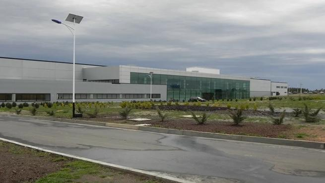
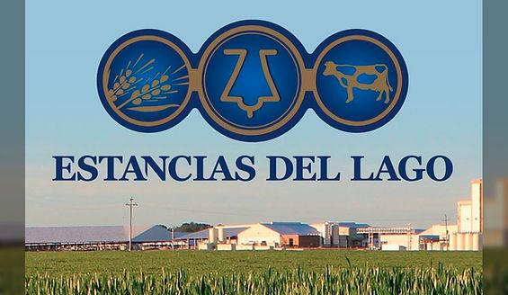
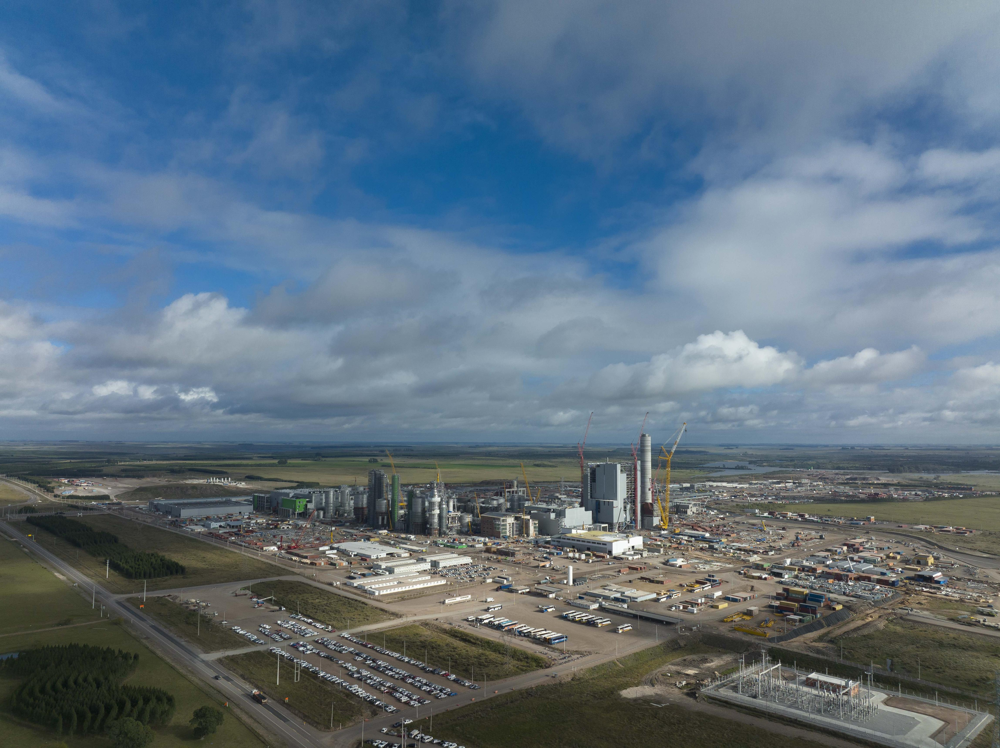
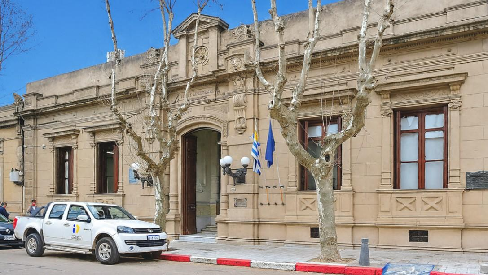

Minerva Foods - BPU
Empresa ubicada en Durazno que desarrolla actividades de la industria cárnica.
📍 Durazno
Ver oportunidadesNoticias claras y actuales del Departamento de Durazno
Oportunidades laborales y llamados de interés para la población de Durazno.

Empresa ubicada en Durazno que desarrolla actividades de la industria cárnica.
📍 Durazno
Ver oportunidades
Complejo agroindustrial dedicado a la producción de leche en polvo.
📍 Santa Bernardina, Durazno
Conocer empresa
Empresa vinculada al sector forestal e industrial de la región.
📍 Paso de los Toros y región
Ver oportunidades
Información sobre llamados, concursos y oportunidades laborales del Gobierno de Durazno.
📍 Durazno
Ver llamados